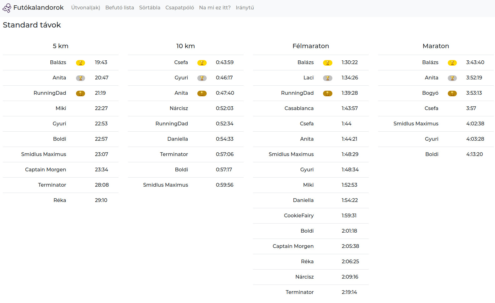
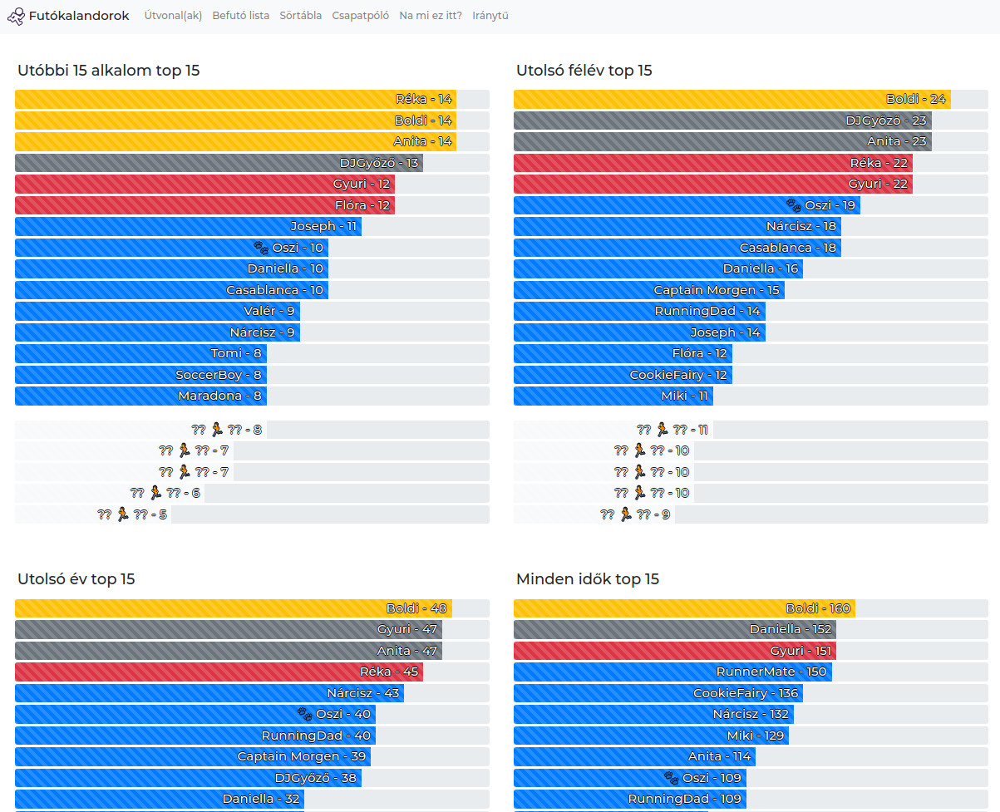
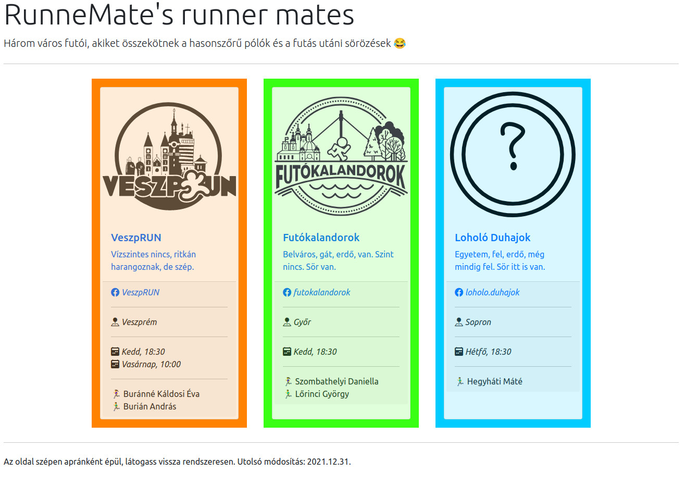
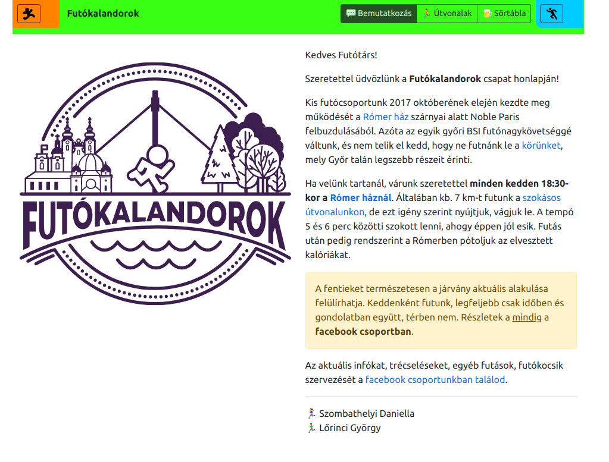
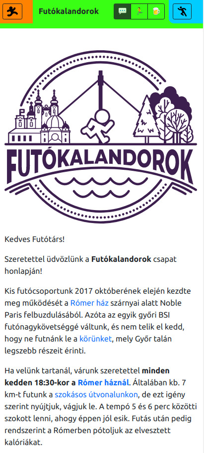
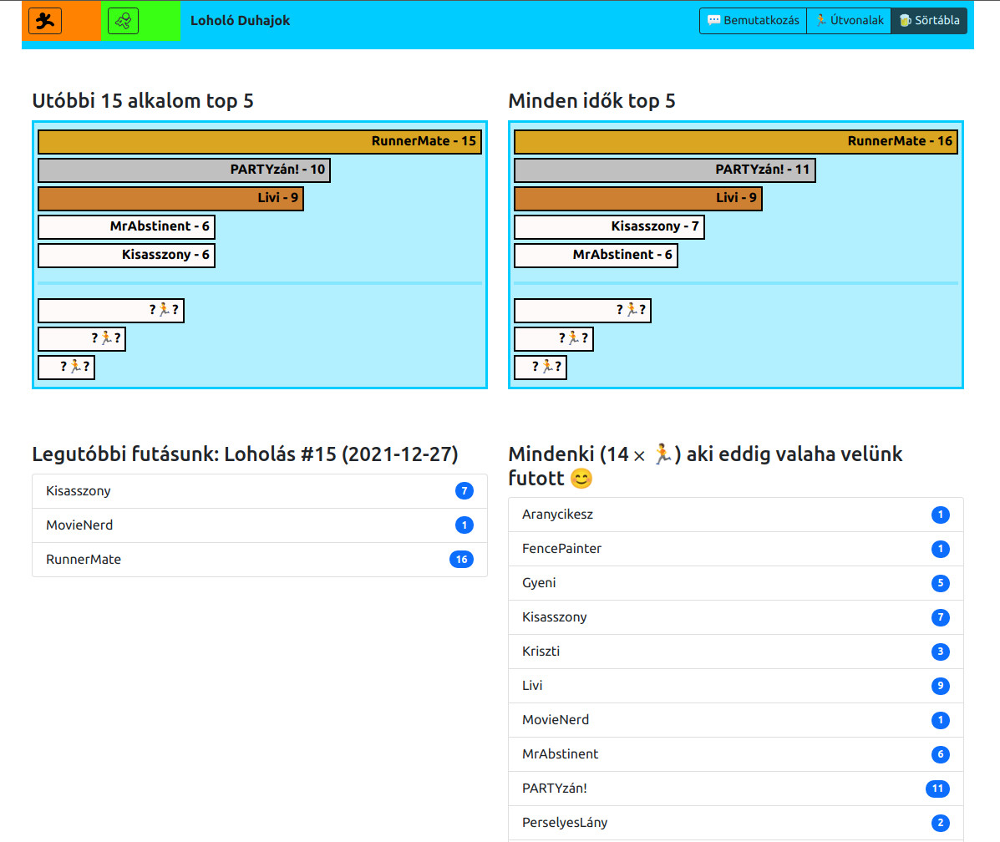
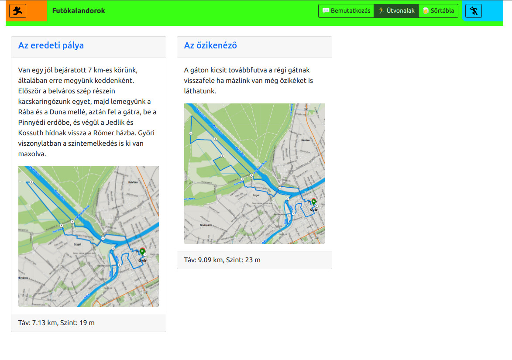

Bár elsőre meglepő lehet, de egy aktív futókör szervezése sok háttérmunkát igényel a csoportos futóverseny nevezésektől a médiában történő megjelenéseken át a közös rendezvényre frissítések megszervezéséig. Ezen feladatok egy része általános, azaz többé-kevésbé minden futókörnél jelentkeznek, másikak az egyes csapatokhoz specifikusak. Amelyik feladat támogatható informatikai eszközökkel, ott sokszor fontos a megfelelő technológia kiválasztása, főleg hogyha hosszútávú működtetés a cél.
E munka célja három "testvér" futókör néhány ilyen tevékenységének a támogatása. A veszprémi VeszpRUN, győri Futókalandorok és a soproni Loholó Duhajok csapat hasonló működésű: egyik futókör sem hivatalos egyesület, csupán egy baráti társaság, akik heti rendszerességgel ugyanabban az időpontban összegyűlnek egy közös futásra, mely után az elégetett kalóriákat is pótolják. Győrben és Sopronban a részvételek számon vannak tartva, és belső kisverseny alapját adják. Ugyanígy vezetett az egyes sztenderd távokon a csapat tagjainak PB listája. Mindhárom futókör pólórendelése közösen történik, illetve közös a "világjáró futópóló" galériájuk is.
A legrégebbi csapat, a VeszpRUN honlapja egy Google Sites oldal volt, mely a fenti dolgokat többé-kevésbé támogatta. Bár magának a honlapnak a szerkesztése felhasználóbarát volt, azonban a toplisták és egyéb aloldalak karban tartása már korántsem volt ilyen egyszerű. Emellett nem igazán volt mobilbarát az oldal, és a Google is lecserélte pár éve az oldalakat támogató motorját, amitől több minden szétesett az oldalon. Vélhetően ennek is köszönhetően a honlap elavult, az eredeti címen már nem is érhető el.
A győri Futókalandorok jelenlegi oldala egy GitHub Pages oldal, melyet a GitHub szervereken futtatott Jekyll generál. Az oldal már 4 éve működik, és bár jelenlegi feladatait ellátja, bizonyos ráncfelvarrások már igen időszerűek volnának.
A soproni csapatnak egy, a győriekéhez nagyon hasonló honlapra volna szüksége. Éppen ezért indokolt volna egy olyan eszköz fejlesztése, mely egyszerre képes ellátni mindhárom futókör igényeit. Egy ilyen rendszer elkészítése esetén logikusan egy helyen lehetnének a közös dolgok, valamint a csapatonkénti, de azonos jellegű dolgok informatikai támogatását, azok ráncfelvarrásait egy helyen lehetne kezelni, elkerülve három párhuzamos oldal karbantartását.
Az itt bemutatott munka ennek a közös rendszernek az eddig elkészült része, mely jelenleg főképp a futókörökkel kapcsolatos általános információinak hirdetését, valamint a sörtáblák elkészítését jelenti. A többi funkció migrálása a Futókalandor oldalról a közeljövőben várható.
A futókörök életének szervezésében vannak olyan dolgok, melyek támogatására egy honlap az ideális, másokra például egy Facebook csoport, mellyel mindhárom csapat rendelkezik is. A heti futások meghirdetése, az erról készült selfie posztolása tipikusan olyan feladat, amit életszerűtlen egy saját honlapon menedzselni. Ugyanakkor a futókörre jellemző statikus információk hirdetőtáblájának szerepét a Facebook csoportok nem tudják megfelelően betölteni. Ilyen információk például, hogy mikor és honnét indulnak rendszeresen a futások, kik a futókör vezetői, nekik mi az elérhetőségük. De hasonló információ az is, hogy miképp néz ki a csapatpóló, hogyan lehet rendelni, mi a mérettáblázat hozzá, vagy hogy hol lehet futóversenyeket keresni, hol vannak a közelben megbíható futócipő boltok, masszőrök, stb. Egy tipikus statikus adat továbbá a közös futásokon jellemző útvonalak listája, bemutatása.
Egy nem teljesen statikus tartalom a ritkán változó historikus adatok. Veszprémben ilyen volt például a mókafutások leírása, valamint a múltbéli eseményekhez tartozó Facebook események, galériák linkje. Mindhárom csapat oldalán érdekes a sztenderd távokon a csapat futóinak PB-jeiből (personal best) álló ranglista, melynek egyetlen működő példája jelenleg a győriek oldalán látható.
Egy győri tradíció a Sörtábla vezetése. A győri futókör indulásakor elhangzott az az igéret, hogy az első 10 futó, aki legalább 10 futásra elmegy, meg lesz hívva egy ajándék sörre. A csapat azóta számon tartja, ki, hányszor volt ott keddenként leróni a 7 km-es távot. Megy a versengés a csapattagok között a 15 alkalmas, féléves, éves, illetve all-time ranglistákon, koccintanak a kerek számokra, stb. 221 közös futás után így néz ki a győri csapat Sörtáblájánakjának egy része:
Ezt a szokást a soproni futókör is átvette, de eleinte csak egy táblázatban vezetve az adatokat.
A tartalmi dolgok mellett a technológiák kiválasztásánál fontos figyelembe venni azt is, hogy a futókörök vezetői idővel változnak, és sok esetben nem rendelkeznek honlapszerkesztői, vagy egyéb informatikai háttérismeretekkel. Példaképp, a veszpémi csapatot két informatikus alapította, de most már több mint öt éve két pénzügyi szakember vezeti. A készítendő oldalnak olyannak kell lennie, hogy a szerkesztési jogosultságok bármikor könnyen átadhatók legyenek, valamint ne igényeljenek komoly szakmai háttértudást.
A konkrét technológiák kiválasztása előtt fontos eldönteni, hogy milyen volna a rendszer alapvető architektúrája. Erre több lehetőség is adódik, a teljesség igénye nélkül:
Mindhárom megoldásnak megvannak az előnyei, hátrányai, és indokolt alkalmazási területeik. A legnagyobb szabadsági fokot érthetően az első megoldás adja, komolyabb weboldalak esetében nem véletlenül ez az általános felállás. Azonban ebben az esetben valahol szükséges a backendet és az adatbázist is hosztolni. Ez minden esetben költséget jelent, akár saját szerverről, akár egy felhő szolgáltatásról van szó. Az anyagi vonzat mellett ebben az esetben szükséges ezeknek a szervereknek a megfelelő karbantartása, biztonsági frissítések telepítése, stb. Utóbbi minimalizálható, amennyiben nem teljes saját szervert tartunk karban, hanem csak például konténerizált appleteket indítunk el egy cloud infrastruktúrán. Az ehhez a felálláshoz lehetséges tech stackekből már csak programozási nyelvenként is Dunát lehetne rekeszteni, de mivel nem erre esett a választás, nem tárgyaljuk őket.
Ha nincsen komolyabb backend logika, akkor egy racionális választás egy frontend heavy megoldás, ahol a kliensben futó js alkalmazás maga gyűjti össze az adatbázisból az adatokat, illetve esetlegesen bővíti/módosítja azt. Amennyiben ezek az adatok ritkán változnak, ennek a megoldásnak a hátránya, hogy viszonylag gyakran elvégzi kliensenként ugyanazokat a számításokat, amit egy backend cache-elés például kiszürhetett volna. Az adatbázis hosztolása ebben az esetben is feladat, azonban ha nem bonyolultak és nagy méretűek az adatok (ami jelen esetben igaz), akkor érdemes egy egyszerű szöveg/json alapú megoldást használni. Népszerű választás a Firebase.
Ha a futókörök szituációját tekintjük, az adatok mérete és komplexitása elenyésző, semmiképpen nem indokolja egy relációs adatbázis használatát. Az adatok módosítása is ritka: a sörtáblát minden futókör egy héten egyszer módosítja, befutólista versenyek után módosulhat, ez már ritkább. A többi tartalom pedig szinte éves szinten változik. Ezek miatt az első megoldás mindenképpen ágyúval ebihalra szituáció volna, még akkor is, ha nem grassroot fejlesztésről volna szó, hanem valamely népszerű keretrendszer felkonfigurálásáról.
Az utolsó lehetőség felhasználóbarát, és a korábban említett Google Sites mellett sok alternativa létezik, mint például a WordPress, WiX vagy Squarespace. A hátránya az ilyen megoldásoknak, hogy ami out-of-the-box működik, az könnyű, programozási tudást sem igényel, viszont ami nem, az sokszor körülményesen valósítható meg. Emiatt egy Sörtábla logika implementálása lehet több energiát venne el, mint a komplett weboldal lefejlesztése.
A fentiekből következik, hogy bár a négy megoldás bármelyike járható, a második és a harmadik talán a legracionálisabb. A két lehetősé közül én a harmadikat választottam, részben a korábbi ismereteim, részben a kihívás miatt. Piaci környezetben mindenképp a kettes megoldás volna követendő.
A struktúrán belül a választásom a GitHub ökoszisztémára esett, melynek részeit az alábbiakban részletesebben be is mutatom. A nem funkcionális követelmények egyikét némileg szigorúbban véve, a dologra egyfajta kihívásként tekintve kikötöttem magamnak, hogy csak nagyon-nagyon szükséges esetben nyúlhatok javascripthez.
Az alapvető felállás a következő:
jekyll build, mely elkészíti az oldal új (statikus) változatát.Ennek a megoldásnak több előnye, és temészetesen hátránya is van:
A Jekyll egy statikus HTML oldalakat generáló rendszer. A modern weboldalak működésétől eltérően módosítások után (pl.: egy új blogposzt megírása) offline lefordul a "forrás", melynek eredménye egy statikus weboldal, mely deploy-olható. Ez az oldal továbbra is tartalmazhat javascriptet, azonban nem tartozik az oldalhoz tradícionális backend. Fapadosan szerkesztett html oldallal szemben az előnye, hogy ismétlődő részeket programozhatóan lehet benne generálni, melyhez alapvetően a Shopify Liquid template nyelvét használja. Maga a Jekyll "fordító" ruby-ban írodott, azonban ennek elsajátítása nem szükséges a használatához, viszont pluginok programozására lehetőséget ad. Azonban fontos észben tartani, hogy a GitHub ezeket a pluginokat nem támogatja biztonsági okokból.
Itt érdemes megjegyezni, hogy saját Github Actions pipeline megírásával lehetőség van saját pluginok használatára.
Ez a megoldás megnyitja a kaput a már lassan elavultnak mondható 3.9.0 Jekyll lecserélésére, vagy akár teljesen más nyelv és honlap generátor alkalmazására is, mint pl Hugo (Go) vagy Pelican (Python).
Igyekeztem a folyamatokat és a stacket a legegyszerűbbnek megtartani, és mivel megoldhatónak tűnt minden az alap szolgáltatásokkal, ezért ezen a kapun egyelőre nem léptem be.
Egy Jekyll projekt több forrást tartalmaz, melyek alapvetően a következő könyvtárakban foglalnak helyet:
_data |
Az oldalhoz tartozó struktúrált adatok |
|---|---|
_includes |
Ismétlődő (html) blokkok. |
_layouts |
Ismétlődő (html) "keretek". |
assets |
Egyéb erőforrások, például képek. |
css |
Stílusfájlok |
_posts |
(Blog)posztok könyvtára. |
A fentiek mellett további könyvtárak is előfordulhatnak, például _sass a SASS fájloknak, de egyelőre ezek használata még nem volt indokolt a projektben.
Mivel a jekyll blog támogatását sem használjuk (jelenleg) ki, ezért a _posts könyvtárt sem használjuk.
Adatfájlokból több formátum is támogatott, pl.: JSON, YAML, CSV, stb.
A projekt a jekyll build parancs hatására lefordul, és az elkészített statikus oldal a _site könyvtárba generálódik.
Ezt, és sok minden más beállítást a _config.yml fájlban lehet megtenni.
A Jelyll beépítetten a Shopify Liquid templating nyelvét használja. A Liquid kódrészletek többnyire a html fájlokba épülnek be, és compile time hajtódnak végre. A nyelvnek nem célja komolyabb programozási feladatok elvégzése, csupán megjelenítési feladatokat automatizál.
A teljesség igénye nélkül néhány alapvető nyelvi elem:
{{variable | filter}} |
Változó értékének kiírása egy filter alkalmazásával. |
|---|---|
{% for item in array %} ... {% endfor %} |
Ciklus. |
{% if condition %} ... {% endif %} |
Elágazás. |
{% assign variable = expression %} |
Új változó létrehozása, változó értékének felülírása. |
{% include file %} |
Forrás bemásolása. |
Fontos megjegyezni, hogy adott rengeteg filter, de újak nem definiálhatók, valamint nem írhatók függvények.
Függvények működését valamelyest az include-okkal lehet helyettesíteni, azonban a scope kezelés nem a megszokott, így könnyen hibára lehet futni.
A kezdőoldal itt érhető el, és a három futókör legfontosabb adatait mutatja meg:
Itt linkek találhatók a csapatok facebook csoportjaira, valamint a logóra vagy a cspaat nevére kattintva az adott futókör bemutatkozására ugrik az oldal:
Az oldal természetesen reszpnzív, keskenyebb kijelzőn ugyanez az oldal így néz ki:
A navigációs sávon lévő gombokra kattintva az adott futókörnél elérhető aloldalak között lehet váltani. A nem kiválasztott futókörök esetében egyetlen gomb jelenik meg, mely az adott futókör bemutatkozására navigál.
Így néz ki például a soproni sörtábla 16 futás után:
Vagy a győriek útvonalainak a listája:
Hátralevő fejlesztés még a befutólista, valamint a pólórendelések oldalának elkészítése.
A kezdeti index.html oldalat leszámítva egyetlen oldalból áll valójában az egész honlap.
Az oldalváltás csak látszat, valójában ilyenkor egyetlen http kérés sem történik, ugyanazon az oldalon különböző részek kerülnek elrejtésre, illetve megjelenítésre.
Ez a dinamika megoldható volna javascripttel és DOM manipulációval, azonban ugyanez a hatás elérhető id tagek használatával és CSS szabályokkal.
Az egyes aloldalak url-je ilyen struktúrát követ: singlepage.html#[group]-[subpage].
A DOM-ban valójában benne van minden aloldal forrása egy subpage osztályba tartozó div-ben, azonban az alábbi CSS beállítások miatt csak az aktuálisan "kiválasztot" jelenik meg:
.subpage {
display: none;
}
.subpage:target {
display: block;
}
Maga a singlepage.html forrása meglehetősen rövid:
---
layout: default
---
{% for group in site.data.groups %}
{% for subpage in group.subpages %}
{% include page.html %}
{% endfor %}
{% endfor %}
Az első blokk, amiket --- jelöli, hogy le kell fordítani a fájlt, nem csak átmásolni a _site könyvtárba.
A layout: default jelzi, hogy a _layouts/default.html keretet használja a fordító a fájl lefordításához, abban a {{content}} helyére illessze be ennek a fájlnak a törzsét.
Ez a fájl tartalmazza a html keretet, a szükséges css-ek betöltésével, stb:
A singlepage.html törzsében szereplő liquid kód betölti minden csoport minden aloldalára az _include/page.html-t, de minden esetben más lesz a group és subpage változók értéke.
Mindkettő egy map, ahogy a _data/groups.yaml idevonatkozó részéből látszódik:
- id: veszprun
subpages:
- type: bemutatkozas
name: Bemutatkozás
icon: 💬
- id: futokalandorok
subpages:
- type: bemutatkozas
name: Bemutatkozás
icon: 💬
- type: utvonalak
name: Útvonalak
icon: 🏃
- type: sortabla
name: Sörtábla
icon: 🍺
shown: 15
hinted: 5
- id: loholoduhajok
subpages:
- type: bemutatkozas
name: Bemutatkozás
icon: 💬
- type: utvonalak
name: Útvonalak
icon: 🏃
- type: sortabla
name: Sörtábla
icon: 🍺
shown: 5
hinted: 3
Maga a _include/page.html is egyszerű, az aloldal típusa alapján delegálja az oldal elkészítését egy másik fájlnak, valamint betölti az adott aloldalhoz tartozó navigációs sávot is:
{% include navbar.html %}
{% include page_templates/{{subpage.type}}.html %}
A következő alfejezetekben a navigációs sávok, valamint az egyes aloldalak működését mutatom be.